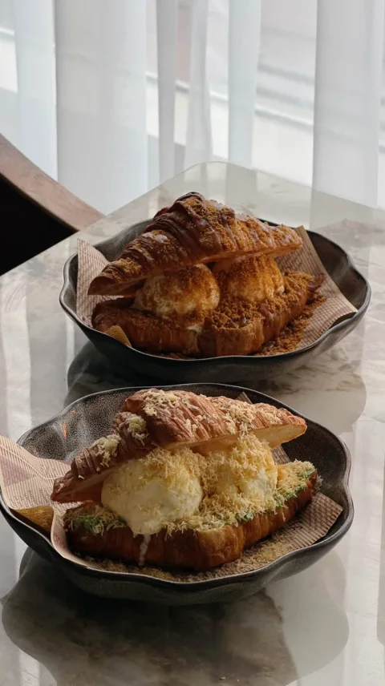
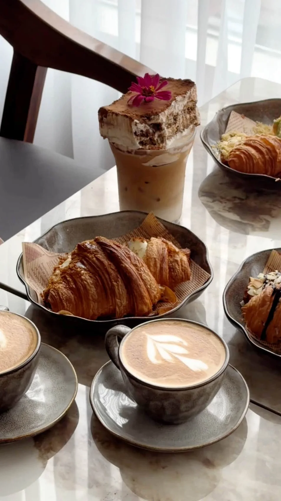
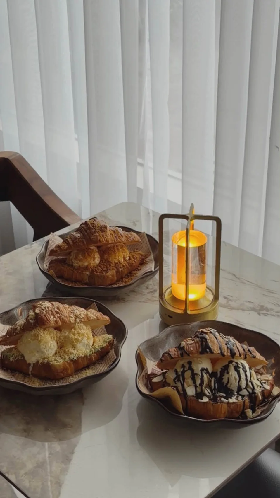

01 / THE CROISSANT COLLECTIONPistachio
Kataifi Royale
Pistachio, kataifi crunch, and ice cream.
TARA, KAPE?
Coffee in your cup. Something sweet on your plate. Make a little room for Ragsak.


THE RAGSAK EXPERIENCE
Espresso, refreshing drinks, and croissant desserts. Ragsak brings them together in Sampaloc, Manila.
A warm lamp, a table of treats, a little time together. Come for your coffee pause. Stay for another bite.
Come say helloFROM OUR TABLE
A few moments from Ragsak’s own photo collection.
Follow along on InstagramCOME BY · SAMPALOC, MANILA
Bring your appetite.
We’ll see you on Maceda Street.
FIND US
1276 Maceda StreetOPENING HOURS
10am–1am
Previously listed on Instagram. Call to confirm hours for your visit, especially on holidays.
GIVE US A CALL
0917 157 1488